1st day of our odisa tour....
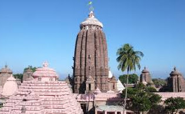
The Jagannath Temple is an important Hindu temple dedicated to Jagannath, a form of Sri Krishna in Puri in the state of Odisha on the eastern coast of India. The present temple was rebuilt from the 10th century onwards, on the site of an earlier temple, and begun by Anantavarman Chodaganga Deva, the first king of the Eastern Ganga dynasty.
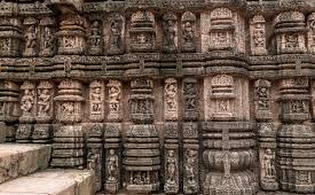
Konark Sun Temple is a 13th-century CE Sun temple at Konark about 35 kilometres northeast from Puri on the coastline of Odisha, India. The temple is attributed to king Narasimhadeva I of the Eastern Ganga Dynasty about 1250 CE. Dedicated to the Hindu Sun God Surya, what remains of the temple complex has the appearance of a 100-foot high chariot with immense wheels and horses, all carved from stone.
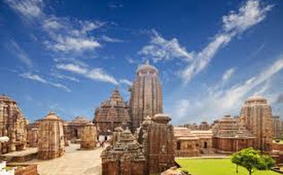
Lingaraja Temple is a Hindu temple dedicated to Shiva and is one of the oldest temples in Bhubaneswar, the capital of the Indian state of Odisha. The temple is the most prominent landmark of Bhubaneswar city and one of the major tourist attractions of the state. The Lingaraja temple is the largest temple in Bhubaneswar. The central tower of the temple is 180 ft tall.
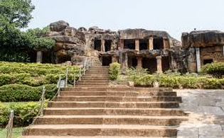
Udayagiri and Khandagiri Caves, formerly called Kattaka Caves or Cuttack caves, are partly natural and partly artificial caves of archaeological, historical and religious importance near the city of Bhubaneswar in Odisha, India. The caves are situated on two adjacent hills, Udayagiri and Khandagiri, mentioned as Kumari Parvata in the Hathigumpha inscription.
2nd day routine..
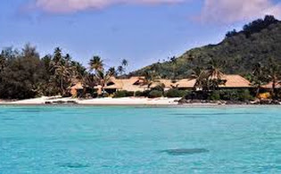
Puri Beach or the Golden beach is a beach in the city of Puri in the state of Odisha, India. It is on the shore of the Bay of Bengal. It is known for being a tourist attraction and a Hindu sacred place. The beach is the site of the annual Puri Beach Festival, which is co-sponsored by the Indian Ministry of Tourism,
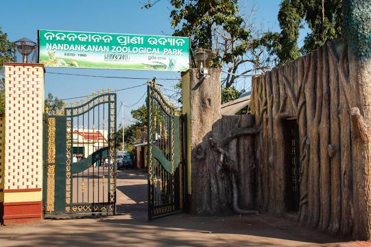
Nandankanan Zoological Park is a 437-hectare zoo and botanical garden in Bhubaneswar, Odisha, India. Established in 1960, it was opened to the public in 1979 and became the first zoo in India to join World Association of Zoos and Aquariums in 2009. It also contains a botanical garden and part of it has been declared a sanctuary.
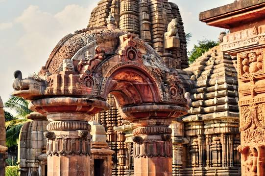
Mukteshwara Temple is a 10th-century Hindu temple dedicated to Shiva located in Bhubaneswar, Odisha, India. The temple dates back to 950–975 CE and is a monument of importance in the study of the development of Hindu temples in Odisha. The stylistic development the Mukteswara marks the culmination of all earlier developments.
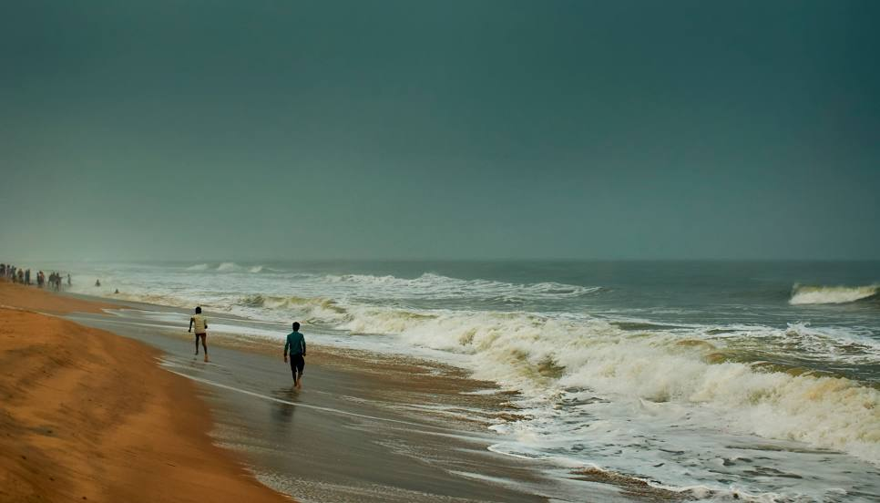
Chandrabhaga Beach is situated three km east of the Sun temple of Konark, in the Puri district in the state of Odisha, India. It is 30 km from the city of Puri. Formerly Chandrabhaga was considered a place of natural cure for lepers. Chandrabhaga beach on the coast of Konark becoming India's first to get the Blue Flag certification
3rd day's sightseeing
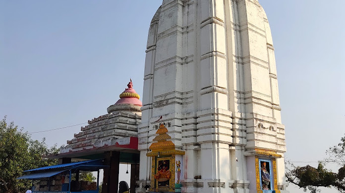
Dhabaleswar Temple is dedicated to the worship of Lord Shiva. It is situated at a distance of 27 km from the city of Cuttack, on the exotic island of Lord Dhabaleshwar.
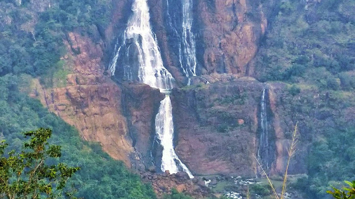
Barehipani Falls is a two tiered waterfall located in Simlipal National Park in Mayurbhanj district in the Indian state of Odisha. It is one of the highest waterfalls in India
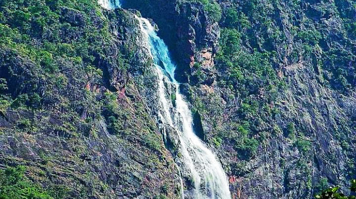
The Khandadhar Falls is located at Nandapani, Bonaigarh in Sundargarh district in the Indian state of Odisha. It is the 12th highest waterfall in India and 2nd highest waterfall in Odisha.
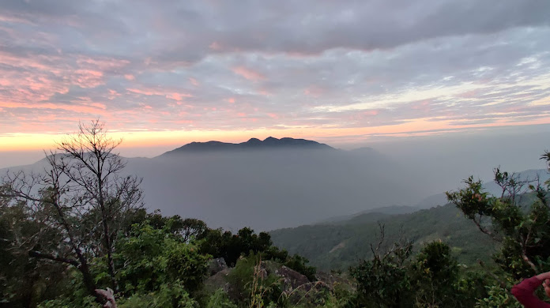
Mahendragiri, is a mountain in Rayagada subdivision of the district of Gajapati, Odisha, India. It is situated amongst the Eastern Ghats at an elevation of 1,501 metres.